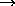

Most characters on the keyboard, such as letters and numbers, have their usual meaning. However the characters
\ { } $ ^ _ % ~ # &
are used for special purposes within LaTeX. Thus typing one of
these characters will not produce the corresponding character
in the final document. Of course these characters are very
rarely used in ordinary text, and there are methods of
producing them when they are required in the final document.
In order to typeset a mathematical document it is
necessary to produce a considerable number of special
mathematical symbols, and to change fonts where appropriate.
Mathematical documents often contain arrays of numbers
or symbols (matrices) and other complicated expressions.
These are produced in LaTeX using control sequences.
Most control sequences consist of a backslash \
followed by a string of (upper or lower case) letters.
For example, \delta, \emph and \to
are control sequences: the control sequence \delta
produces the greek letter
,
the control sequence \emph, when followed by text
enclosed within braces, will cause that text to be emphasized
(usually by typesetting it in an italic font),
and the control sequence \to
(or \rightarrow) produces the arrow
.
There is another type of control sequence which consists
of a backslash followed by a single character that
is not a letter. Examples of control sequences of this type
are \{, \" and \$.
The `braces' { and } are used for grouping:
the characters they enclose are treated as a single `group',
which can be specified as an `argument' of a control sequence
such as \emph, or as a superscript or subscript in
a mathematical formula. Control sequences included in such
a group apply only to the contents of the group.
The special character $ is used when embedding
mathematical expressions in paragraphs of ordinary text
in order to change into and out of `mathematics mode'.
The special characters ^ and _
are used in mathematical expressions to produce superscripts
and subscripts respectively.
The special character % is used to introduce
`comments' into the input file that do not appear in the
final document: all characters occuring after %
on any line of the input file are ignored by LaTeX.
The special character # is used to specify arguments
in definitions of control sequences.
The special character & is used when typesetting
tables in order to separate entries in different columns.